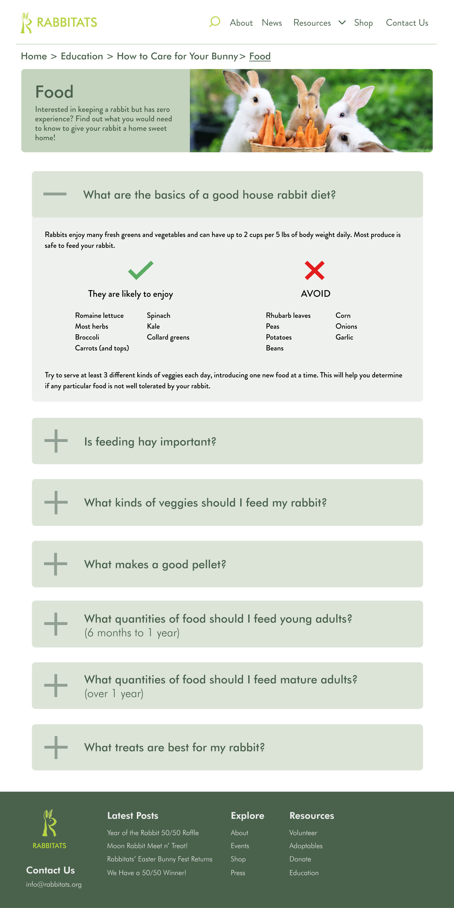

Rabbitats Website Redesign
Project Goal
To propose a specific problem with an existing website of a socially good organization (Our client), and develop a proper strategy to resolve that problem, backed up with strong evidence and rationale.
Project Duration
- 4 Weeks
Tool Used
- Figma
Project Type
- Group Project
My Role
- UI/UX Design
- User Research
- Client Research
- Slide Deck Design

A vital key to this project’s success is to determine exactly what client is within the scope of the project given the constraint in place, as well as what topic that was chosen that is to be tackled. As I took part in researching the correct client and problems that can be tackled, I place significant emphasis on realistic scoping. A client cannot be too big so that the user/client research process becomes too complex with the given time limit, and the problem needs to be specific enough so that the team can realistically determine a perfect strategy. My approach proved to be effective as I’m the one who had recommended the organization Rabbitats and its respective problem, which is perfect for the project.
Rabbitats is a Richmond based rabbit rescue organization that was created in response to the feral rabbit epidemic in the area. Upon further investigation of the organization’s mission, its website and users, I determined that Rabbitat’s website had failed to proper represent a key aspect of the organization’s mission, which is to educate potential or current rabbit pet owners, as pet abandonment is the primary source of the feral rabbit population. Two specific problems I’ve identified are first the relatively hidden education section within the webpage that discourages users from interacting with it, and the poorly organized education section itself. This proved to be a realistically scoped problem for the group to resolve.
After much discussion, I proposed the idea to modify certain elements of the webpage to make the education section more standout for its users in order to encourage them to explore this section, as well as a plan to overhaul the education page itself so that it’s much more user friendly. During the ideation process, I’ve also helped with prototyping of the solution.
Finally, I organized the order in which our strategy is to be presented through our slick deck. The main purpose being able to properly digest and communicate the problem, solution, and our iterative design process to our audience. In which I’ve suggested the group to first explain the rationale, then a precise problem statement explain our scope of framing, then finally to present the prototype we have completed.